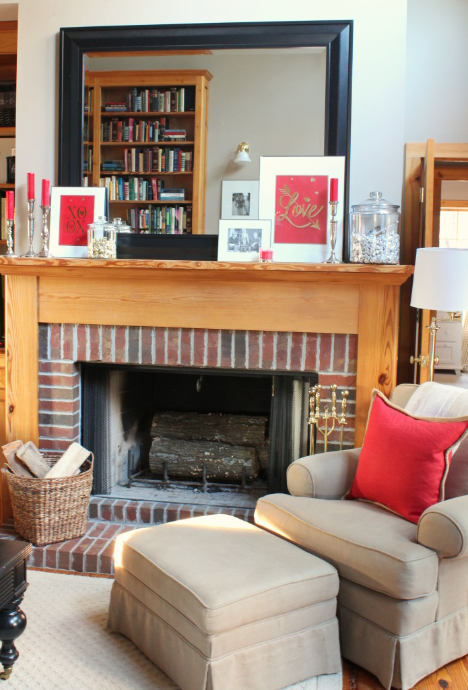

.png)
.PNG)
.PNG)
.PNG)
.PNG)
.PNG)
.JPG)
.JPG)
.PNG)
.PNG)


I usually do not like using gift bags, especially since I seem to love pretty gift wrap and ribbons, but for some strange reason, I have seen a number of gift bags for Valentine’s Day that I really love. Â The lettering and color schemes have all been very pretty. Â So that got me to thinking …..Wouldn’t they make pretty seasonal art for the family room?
And that is just what I did…I made art out of two gift bags from Walmart.  🙂
And just in case you want to do the same, here is an easy tutorial.
You will need a frame, some tape, scissors, glue, and your gift bag.
 First, cut off the ribbons and then the side that you are wanting to frame. Â Do not cut ON the fold. Â You want to leave a little around the folds so that you can tape it all down. Â Plus it helps to keep your sides straighter when cutting.
First, cut off the ribbons and then the side that you are wanting to frame. Â Do not cut ON the fold. Â You want to leave a little around the folds so that you can tape it all down. Â Plus it helps to keep your sides straighter when cutting.
Tape all the edges down flat.
Make a few paper hearts. Â (I used a scrap from the other shopping bag I framed.) Â Glue the hearts over the handle holes on the bag. Â Then put a rolled piece of tape in each of the corners on the back. Center the art work over the white mat-board.
Add the glass,and viola...you have a piece of art ready to display wherever you would like. 🙂
Besides the art, there is also a new red buffalo checked pillow on the sofa.  I made this pillow before Christmas with scraps from the kitchen curtains but somehow managed to not show it to you until now.  So sorry!  At least it fits with decorating for Valentine’s Day, right? 🙂
The cabinet in the foyer also has a few little bits of holiday decorating in red…that plant, the books, the candles,…
and the small treat bags.
They were very easy to make. Â Just cut out a few construction paper hearts, and write your message on them. Â Drop a Little Debbie Valentine brownie in a small sack. Â Fold it close. Â Use a whole-punch to make holes for the ribbon at the top. Â Tie on the ribbon, and glue on the heart. Â Easy-peasy!
The hardest part is resisting those darn chocolate brownies inside!!
I will have our dining room and kitchen for you to see in the next post.  Hope you won’t be tired of Valentine’s decorating by then! 🙂
I appreciate you sooo much for stopping by.
XOXO my friends!


.PNG)
Where did you get that bathroom vanity and mirror?! I love it!
———————————————————————
Are you asking about the ones in my husband’s office? The vanity is one he built to look like a small table, and the mirror came from Lowes. Glad you liked them!
Kelly
I love your couch! I have been looking for one just like that and am wondering where you found yours? Love your website, my favorite by far!!!
——————————————————————-
Susan, I am afraid that couch is over 10 years old. It was made by Highland House and was originally red. I had it recovered a year or so ago in this fabric: http://lsfabrics.com/fabric/perth-24 (Perth by Kaufmann.)
Hope this helps!
Kelly
I love that bag idea! You are so clever! I bought the cutest bags today for Valentine gifts. (I know, I like to give wrapped gifts better too.) Now, I am going back for more bags. The only thing is that the best side of the bag is the side with the fold. Maybe I can iron it. (Stop it, Josie!) She thinks I iron every thing! Happy Valentine’s Day, Kelly!
——————————————————————
I hope your Valentine’s Day was a good one Kathy. I do think ironing would help get rid of the fold line. (Don’t let Josie make fun of you. 🙂 )
Kelly
Kelly,
It all looks great! I think I spy some almond kisses in a jar! I love those things! Your new pillow on the couch looks really nice! You always do such a great job with your decorating and make everything look so cozy and inviting, yet neat and organized. Thanks for sharing with us! Take care!
———————————————————————-
You certainly have a great eye Dawn! Yes,those are almond kisses in the jar on the mantel. 🙂 Thank you for reading and for taking the time to leave a comment. Hope your Valentine’s weekend was a good one.
Kelly
Kelly, sooo many ideas to share today. Luvin it all! Your chair and ottoman in your family room are the pieces I have decided to add to my living room. And the beautiful tray to corral the books and candles will be in my home somewhere soon. I delight in your home and its decor. And you do all this and teach math? You are totally awesome. Stay well and Happy Valentine Day.
———————————————————————
I love that chair and ottoman…best seats in the house! Hope you get yours soon. 🙂
Kelly
Love the new red plaid pillow and I have to say, I loved the red plaid one with pom pom trim, in your daughters room as well. I’m sure you made them both, right? What a great idea for making some easy VD décor, by using the gift bags. Now, in the future I will be looking at gift bags with a different eye. You know we readers are always drooling over your jars. Where do you get the small white bags for the little Debbie treats? Paper Source?.. Hobby Lobby? Curious…
——————————————————————–
Yes, I did make both of the pillows. (It is hard to find red pillows of any kind except at Christmas around here.) I think the bags came from Hobby Lobby…seems like that is where I picked them up. If that is not correct, then they came from Michaels. I try to stock up on them through the year.
Kelly
Kelly,
I love the framed bag idea. It looks great on your mantle. The little debbie treats are great and seem very special when packaged the way you have them. I agree with one of your readers…how to you avoid eating all the yummy goodies you stock for your wonderful jars? I buy a package of m&ms and they’re gone within a week to 10 days.
I never tire of your posts on your home decor!
xo,
Karen
——————————————————————-
Thank you for all your compliments Karen. I thought those bags were too pretty to not use somewhere else.As far as the goodies go, my skinny middle child beats everyone to the jar contents. He can really put them away!
Kelly
Love the framed art idea……love all the red……..isn’t it nice that red works for so many holidays!!! Have a great Valentine’s day!
———————————————————————
Yes, it IS so nice that red works for so many holidays! You know I am loving my red!! 🙂
Hope your Valentine’s Day was full of fun.
Kelly
Such great ideas, Kelly!! But I am not sure I could have those Little Debbies and all those Hershey Kisses in my house, heh!
——————————————————————-
I’m so glad you liked the ideas Barbara. Yes, those Hershey kisses and other snacks are awful tempting, but I have been doing very well with avoiding them. (But let’s just say that Valentine’s Day is no fun when you can’t have chocolate. 🙠)
Kelly
Your ideas are so creative and festive! Thanks for sharing; I always enjoy seeing your lovely home and the ways you make everyday beautiful! Happy Valentine’s Day!!
———————————————————————
You are so sweet Renee. Thank you for your compliments!
Kelly
I’ve always liked the idea of framing pretty gift bags. These came out really nice for your mantle. And, I’d bet that whoever originally designed the artwork for those bags appreciates your displaying and showing some love for them in your home, too! 🙂
——————————————————————–
I don’t know why I have not thought of framing them before. I am sure there are Christmas ones that are equally pretty….must.look.for.gift.bags. 🙂
Kelly
I’m also a lover of red, the pictures on your fire place mantel are so cute, I also will be stealing this idea. Love your home and blog.
———————————————————————
Steal any idea you can use Linda! I am glad it gave you an idea. 🙂 thank you for your kind words here.
Kelly
Great idea in using the gift bags as art! I will be stealing this idea!
——————————————————————
I am happy you liked the idea Arlene. It is easy and makes a nice punch of color for the holiday decorating.
Kelly
Since today is my BD I “claim” this posting as my present!:) I am making both these DIY’s before Saturday!! I just love the projects! Thank you for all your inspiration! Just loving the RED! Hope your Valentine’s Day is really LOVE-ly!
————————————————————————
Yes, you may most certainly claim this post as your present! I hope your b-day was wonderful!!! Have fun with the projects. 🙂 Thank you for reading and leaving your sweet comment Louvina.
Happy birthday wishes to you!
Kelly
Kelly,
Never, never enough red! I am a red lover too and there is a splash of red in every room in our home! Red makes me sooo happy!
I have followed you for a long time and love absolutely everything! We have the same taste.
Thank you for sharing your beautiful home!
~Bobbie
———————————————————————–
Bobbie, if there is red in every room of your home, then I know I would love it. 🙂 Thank you for reading all the rambling here, and for taking the time to leave your sweet comment.
Kelly